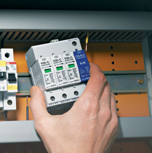

- A magyar villamos energia rendszer felépítése, védelmi stratégiák a feszültségszinttől és a hálózat topológiájától függően
- Alapfogalmak, védelmek, automatikák feladata, követelmények
- Kapcsolat a környezettel, a technológiával
- Az alkalmazott zárlatszámítási módszerek áttekintése, hálózati hibák érzékelésének lehetőségei
- A védelmek szelektív beállításának elve, feltételei
- Túláramvédelmek alkalmazása és korlátai, beállításuk számítása különböző hálózatképek, berendezések esetén
- Impedancia relék működési elve, érzékelési egyenletek és zárlatfajták kapcsolata
- Szelektív beállítás feltételei, karakterisztikák
- Érzékelési egyenletek, szelektív beállítás feltételei, karakterisztikák, érzékelést torzító hatások
- Kölönbözeti védelmek működési elve
- Transzformátor differenciálvédelmek, kiegyenlítés számítása
- Szakasz-védelmek, gyűjtősín diszpozíciók, gyűjtősín differenciál-védelmek
- Digitális (numerikus) védelmek, érzékelési egyenletek, algoritmusok
- Zavaró jelek és azok kiszűrésének lehetőségei, üzemzavari-, és üzemviteli automatikák feladata, működési feltételeik
- Védelem-automatika üzemmódok koordinálása, alkalmazott zárlat-, és földzárlatvédelmi rendszerek
- Komplex védelmek
- Az alállomási irányítási rendszer és a védelmi rendszer együttműködése
- Mérőváltók jellemzői, kapcsolásai, speciális mérési módszerek, ellenőrző mérések
|

|